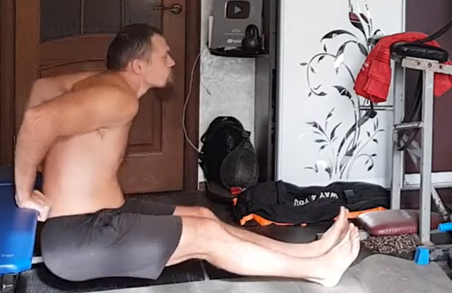
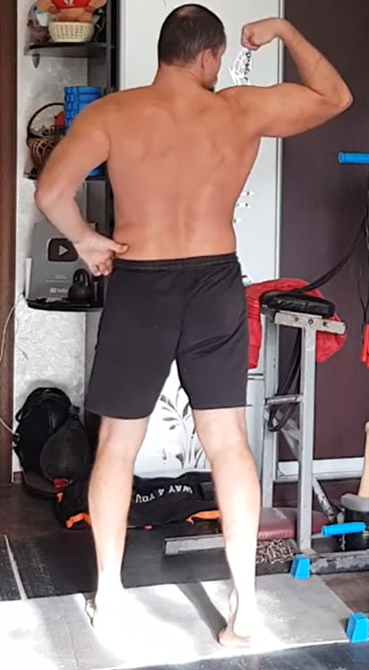
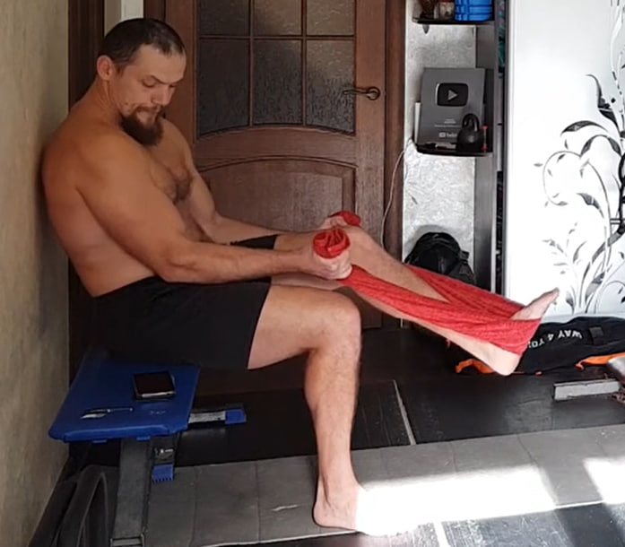

Día 22: empuje (pecho, hombros y tríceps) + isometría y control (sin equipo)
Hoy trabajamos empuje (pecho, hombros y tríceps), isometría y control, agarre y antebrazos con ejercicios simples que caben en una habitación. El objetivo es construir fuerza útil, resistencia y control corporal con el mínimo de equipo.
Prioriza la técnica, respira con control y acumula consistencia: incluso una sesión corta suma cuando la repites día tras día.
1. Flexiones — 4×10
Antes de empezar: haz el calentamiento y repasa la respiración. (No lo saltes.)

Colócate en posición de plancha: manos a la anchura de los hombros, cuerpo en línea recta y abdomen firme. Desciende de forma controlada llevando los codos hacia atrás (sin abrirlos demasiado). Baja el pecho hacia el suelo y sube empujando fuerte, terminando arriba sin bloquear completamente los codos.
Ejecución: 4 series de 10 repeticiones.
2. Fondos en banco — 4×10
Antes de empezar: haz el calentamiento y repasa la respiración. (No lo saltes.)

Apoya las manos en el borde de un banco/silla detrás de ti, con el pecho abierto y los hombros abajo. Desciende flexionando los codos hacia atrás hasta una profundidad cómoda, y luego sube empujando de forma controlada sin bloquear completamente los codos. Mantén el cuerpo estable y el movimiento limpio.
Ejecución: 4 series de 10 repeticiones.
3. Flexiones — 3×10
Antes de empezar: haz el calentamiento y repasa la respiración. (No lo saltes.)

Misma técnica que en el ejercicio 1: cuerpo en línea recta, codos hacia atrás, baja con control y sube fuerte. Termina arriba sin bloquear completamente los codos.
Ejecución: 3 series de 10 repeticiones.
4. Fondos en banco — 3×10
Antes de empezar: haz el calentamiento y repasa la respiración. (No lo saltes.)

Misma técnica que en el ejercicio 2: hombros abajo, codos hacia atrás, rango cómodo y subida controlada sin bloquear completamente los codos . Ejecución: 3 series de 10 repeticiones. Misma técnica que en el ejercicio 2: hombros abajo, codos hacia atrás, rango cómodo y subida controlada sin bloquear completamente los codos . Ejecución: 3 series de 10 repeticiones.
5. Flexiones — 2×10
Antes de empezar: haz el calentamiento y repasa la respiración. (No lo saltes.)

Repite las flexiones con la misma técnica: plancha firme, descenso controlado y subida potente. Termina arriba sin bloquear completamente los codos.
Ejecución: 2 series de 10 repeticiones.
6. Fondos en banco — 2×10
Antes de empezar: haz el calentamiento y repasa la respiración. (No lo saltes.)

Repite los fondos con control, sin balanceo del cuerpo. Mantén los hombros abajo y sube sin bloquear completamente los codos.
Ejecución: 2 series de 10 repeticiones.
7. Flexiones — 1×10
Antes de empezar: haz el calentamiento y repasa la respiración. (No lo saltes.)

Colócate en plancha con el cuerpo firme. Baja con control y sube fuerte. Termina arriba sin bloquear completamente los codos . Ejecución: 1 serie de 10 repeticiones.
8. Fondos en banco — 1×10
Antes de empezar: haz el calentamiento y repasa la respiración. (No lo saltes.)

Una serie más de fondos, controlando el rango. Sube sin bloquear completamente los codos y mantén la postura estable.
Ejecución: 1 serie de 10 repeticiones.
9. Supinación isométrica de bíceps — 3×10 por brazo (10 s)
Antes de empezar: haz el calentamiento y repasa la respiración. (No lo saltes.)
Protocolo isométrico: tensión 10 s + descanso 5 s × 10 repeticiones (por lado, si aplica). Respira 3‑3‑3 durante la tensión (inhalar 3 s, retener 3 s, exhalar 3 s) y usa 3‑6‑3 entre series para recuperar. Más detalles: Respiración.

De pie y firme. Flexiona el brazo como en una pose de bíceps y gira la muñeca hacia afuera (supinación) para buscar la máxima contracción. Mantén el hombro abajo y el codo controlado (sin encoger el cuello).
En cada repetición, aprieta el bíceps con fuerza durante 10 segundos, sin balancear el cuerpo. Puedes variar un poco el ángulo del brazo para encontrar la mejor contracción.
Ejecución: 3 series de 10 repeticiones por cada brazo (10 s por repetición).
10. Bíceps con toalla/cinturón — 2×10 (10 s)
Antes de empezar: haz el calentamiento y repasa la respiración. (No lo saltes.)

Repite el ejercicio 10 con la misma técnica: codos pegados al cuerpo, hombros abajo, contracción máxima. En cada repetición aprieta 10 segundos . Ejecución: 2 series de 10 repeticiones (10 s por repetición). En cada repetición aprieta 10 segundos , suelta y vuelve a tensar. Ejecución: 2 series de 10 repeticiones (10 s por repetición).
11. Supinación isométrica de bíceps — 2×10 por brazo (10 s)
Antes de empezar: haz el calentamiento y repasa la respiración. (No lo saltes.)
Protocolo isométrico: tensión 10 s + descanso 5 s × 10 repeticiones (por lado, si aplica). Respira 3‑3‑3 durante la tensión (inhalar 3 s, retener 3 s, exhalar 3 s) y usa 3‑6‑3 entre series para recuperar. Más detalles: Respiración.

Repite el ejercicio 9 con la misma técnica: supinación para máxima contracción, hombro abajo, sin balanceo. Aprieta 10 segundos en cada repetición. Ejecución: 2 series de 10 repeticiones por cada brazo (10 s por repetición). Repite el ejercicio 9 con la misma técnica: supinación para máxima contracción, hombro abajo, sin balanceo. Aprieta 10 segundos en cada repetición. Ejecución: 2 series de 10 repeticiones por cada brazo (10 s por repetición).
12. Bíceps con toalla/cinturón — 2×10 (10 s)
Antes de empezar: haz el calentamiento y repasa la respiración. (No lo saltes.)

Repite el ejercicio 10 con la misma técnica: codos pegados al cuerpo, hombros abajo, contracción máxima. En cada repetición aprieta 10 segundos . Ejecución: 2 series de 10 repeticiones (10 s por repetición). Repite el ejercicio 10 con la misma técnica: codos pegados al cuerpo, hombros abajo, contracción máxima. En cada repetición aprieta 10 segundos . Ejecución: 2 series de 10 repeticiones (10 s por repetición).
13. Supinación isométrica de bíceps — 1×10 por brazo (10 s)
Antes de empezar: haz el calentamiento y repasa la respiración. (No lo saltes.)
Protocolo isométrico: tensión 10 s + descanso 5 s × 10 repeticiones (por lado, si aplica). Respira 3‑3‑3 durante la tensión (inhalar 3 s, retener 3 s, exhalar 3 s) y usa 3‑6‑3 entre series para recuperar. Más detalles: Respiración.

Una última serie del ejercicio de supinación: busca máxima contracción y mantén 10 segundos en cada repetición. Ejecución: 1 serie de 10 repeticiones por cada brazo (10 s por repetición). Una última serie del ejercicio de supinación: busca máxima contracción y mantén 10 segundos en cada repetición. Ejecución: 1 serie de 10 repeticiones por cada brazo (10 s por repetición).
14. Bíceps con toalla/cinturón — 1×10 (10 s)
Antes de empezar: haz el calentamiento y repasa la respiración. (No lo saltes.)

Una última serie del bíceps con toalla/cinturón. Mantén la postura estable y aprieta 10 segundos en cada repetición.
Ejecución: 1 serie de 10 repeticiones (10 s por repetición).
15. Flexiones — 1 serie al máximo
Antes de empezar: haz el calentamiento y repasa la respiración. (No lo saltes.)

Colócate en posición de plancha y realiza flexiones con técnica limpia: codos hacia atrás, cuerpo firme, sube sin bloquear completamente los codos.
Ejecución: 1 serie al máximo (todas las repeticiones que puedas manteniendo la técnica).
Cierre
Experimenta: ajusta ángulos, rango y puntos de tensión hasta encontrar la versión que te sienta bien. Lo importante es que el entrenamiento sea sostenible y te dé ganas de volver. Crea condiciones para entrenar con regularidad, aunque sea poco: 10 minutos cuentan. Esta rutina está pensada para eso: que puedas cumplir incluso con poco espacio, poco tiempo y circunstancias difíciles.